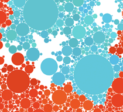
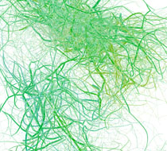
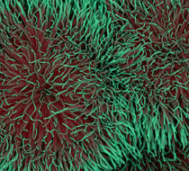
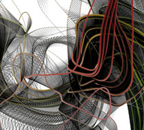

Cell Cluster
Cell Cluster is a generative artwork written in
Processing. Each circle buds new circles from it’s perimeter. The circles grow until they collide with another. Beginning with one, or a few circles, the screen gradually fills. The color of each circle is a slight variation of it’s parent, and the colors slowly shift, radiating out from the center.
Interacting with the application, viewers can draw and remove circles. When new circles are drawn, they begin budding and a new structure emerges from that point. As circles are removed, the empty spaces they leave are gradually filled.
Pulsus for iPad
Ribbons
Ribbons is a generative artwork created in
Processing which generates undulating, translucent forms. The script is based on a particle system which creates a string of particles chained together by springs. As the particles are pushed around the screen by various forces, a curve is drawn along them every frame. As the application runs, it traces the history of this ribbon of particles.
WikiWeb

Filaments
Filaments is a piece of generative art based on a particle system in which particles, moving in a perlin wind and repelling each other, constantly split. Complex branching tangles are drawn by the courses of the particles. Particles gradually taper off as they live out their lifespan.
A pseudo 3d effect is achieved by overlaying a series of circles with a semitransparent circles so that the color shifts from the center to the edges of the tendrils.

Anemone
Anemone is a piece of generative art which generates complex pseudo three dimensional forms. The script is based on a particle system created in
Processing. Particles flow out of the mouse and across the screen, repelling each other. Each particle tapers off into green threads and eventually dies.
The 3d look is achieved by overlapping a string of circles with a semi transparent stroke. As the particle dies, the fill disappears, leaving the green shell.
Pulsus
Pulsus is a flash game based on a particle system. Players must place objects onto the screen to push particles from emitters to goals. Play Pulsus at
PulsusGame.comThe List List
The List List is a collaborative list of lists. Visitors to the site can add lists and list items and vote on their favorites. It was an exercise in web design and user experience. The goal was to create a single page website which built a community around itself.

Spinal Network
Spinal Network is a piece of generative art based on a particle system built in
Processing. Particles, generated by the mouse, flow around the screen, pushed by each other and a perlin noise wind. When particles come close a line is drawn between them creating the twisting bands reminiscent of DNA strands and other biological phenomena.
Make Something Cool, Every Day
Make Something Cool Every Day
Mandala
For numerous months through 2006 and 2007 I became fascinated with pattern and symmetry, possible still the driving forces of my work. They began as byzantine patterns meticulously drawn in Illustrator. Eventually they arrived at a more synthetic aesthetic as I developed generative processes of distorting and manipulating forms to create complex images.
Photographs
Although never my primary focus, photography has always been an interest of mine. I take a lot of inspiration from nature and use photography to capture exciting colors, textures, forms and patters.